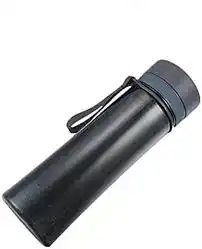
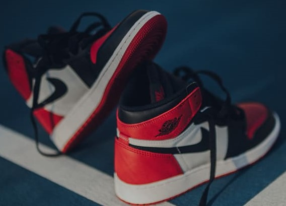
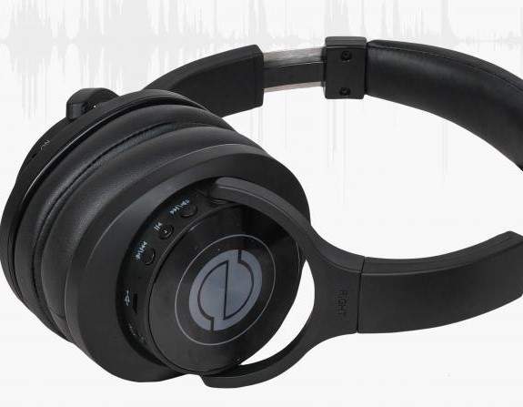

Case Study:
Google lens vs mobilenet
VS
MOBILENET
1st IMAGE:

Google lens:- Water Bottle
Moblilenet:- Water Bottle
RESULT:
DRAW
2nd IMAGE:

Google lens:- Canvas Shoes
Moblilenet:- Running Shoes
RESULT:
GOOGLE LENS IS MORE ACCURATE
3rd IMAGE:

Google lens:- Headphones
Moblilenet:- Microphones,Mike
RESULT:
GOOGLE LENS IS MORE ACCURATE
4th IMAGE:
Google lens:- Soft Toy
Moblilenet:- Ski Mask
RESULT:
GOOGLE LENS IS MORE ACCURATE
5th IMAGE:
Google lens:- Bed,Pillow,Blanket
Moblilenet:- Bathtub,Bathing Tub,Bath,Tub
RESULT:
GOOGLE LENS IS MORE ACCURATE
A total of 5 images were tested
Google Lens detected 4 of them more accurately than Mobilenet, so according to the study, Google Lens is superior than Mobilenet.
Google Lens detected 4 of them more accurately than Mobilenet, so according to the study, Google Lens is superior than Mobilenet.